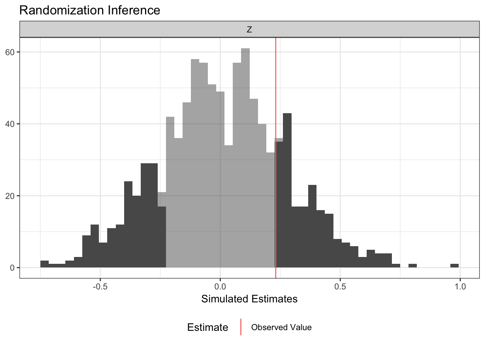

ri2 has specific support for the following:
- All randomization schemes in randomizr.
- Difference-in-means and OLS-adjusted estimates of ATE estimates using R-native formula syntax.
- Multi-arm trials.
- ANOVA-style hypothesis tests (e.g., testing interaction term under null of constant effects),
Additionally, ri2 provides:
- Accommodation for arbitrary randomization schemes
- Accommodation for arbitrary (scalar) test statistics
You can install ri2 is on CRAN
If you’d like to install the most current development release, you can use the following code:
Here is the basic syntax for a two-arm trial:
library(ri2)
#> Loading required package: randomizr
#> Loading required package: estimatr
N <- 100
declaration <- declare_ra(N = N, m = 50)
Z <- conduct_ra(declaration)
X <- rnorm(N)
Y <- .9 * X + .2 * Z + rnorm(N)
dat <- data.frame(Y, X, Z)
ri_out <-
conduct_ri(
formula = Y ~ Z,
declaration = declaration,
assignment = "Z",
sharp_hypothesis = 0,
data = dat
)
plot(ri_out)
summary(ri_out)
#> coefficient estimate two_tailed_p_value null_ci_lower null_ci_upper
#> 1 Z 0.4849788 0.065 -0.5083699 0.4927273The development of ri2 is supported by a Standards Grant from EGAP and the UK Department for International Development.